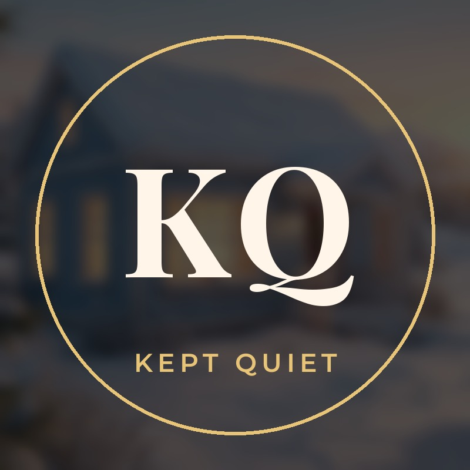

KEPT QUIET
Some secrets are kept for a lifetime
Kept Quiet is a YouTube channel of animated, first-person drama stories about the things people never say out loud: hidden pasts, family secrets, betrayals and the moment the truth finally comes out.
New full stories every week and new Shorts every day.
About this site
This site belongs to the creator of Kept Quiet. The channel uses the YouTube Data API through its own private tool ("Kept Quiet Uploader") to upload its own videos, thumbnails and captions and to manage its own channel settings. The tool is used only by the channel owner and is not offered to other users.